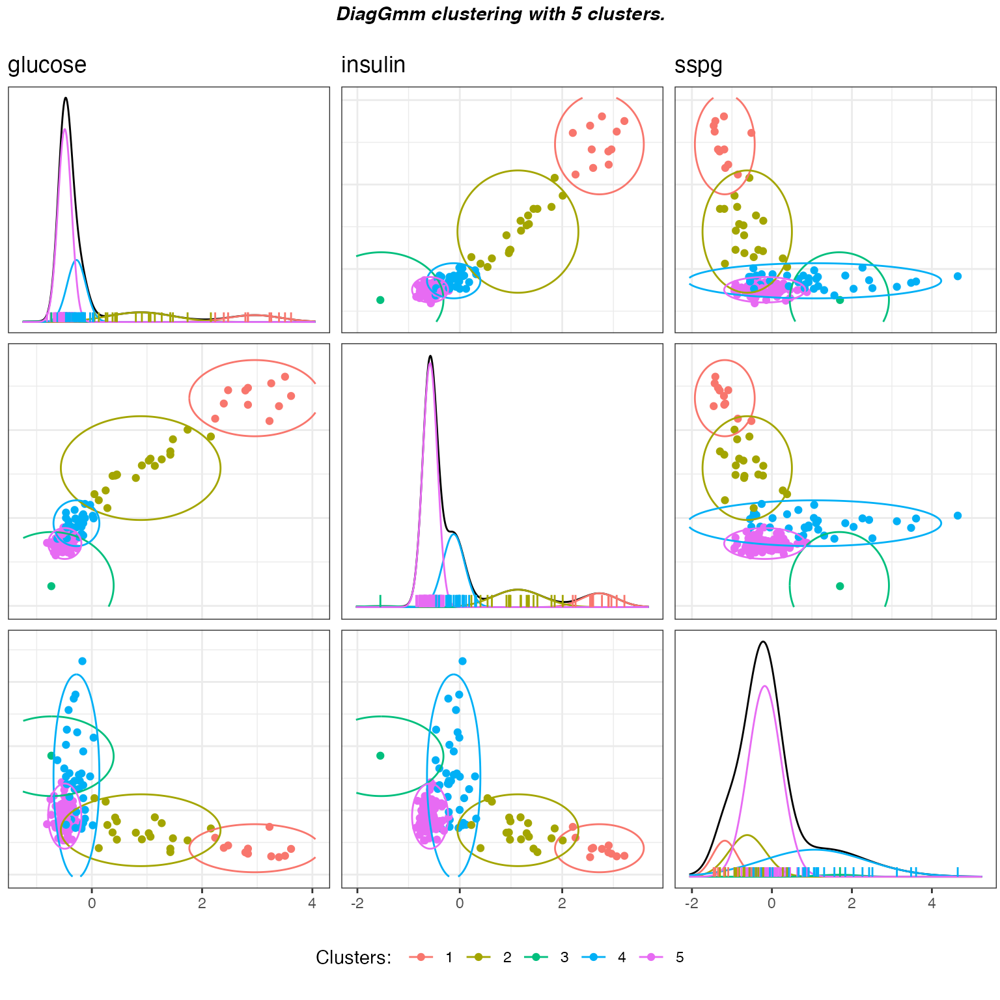
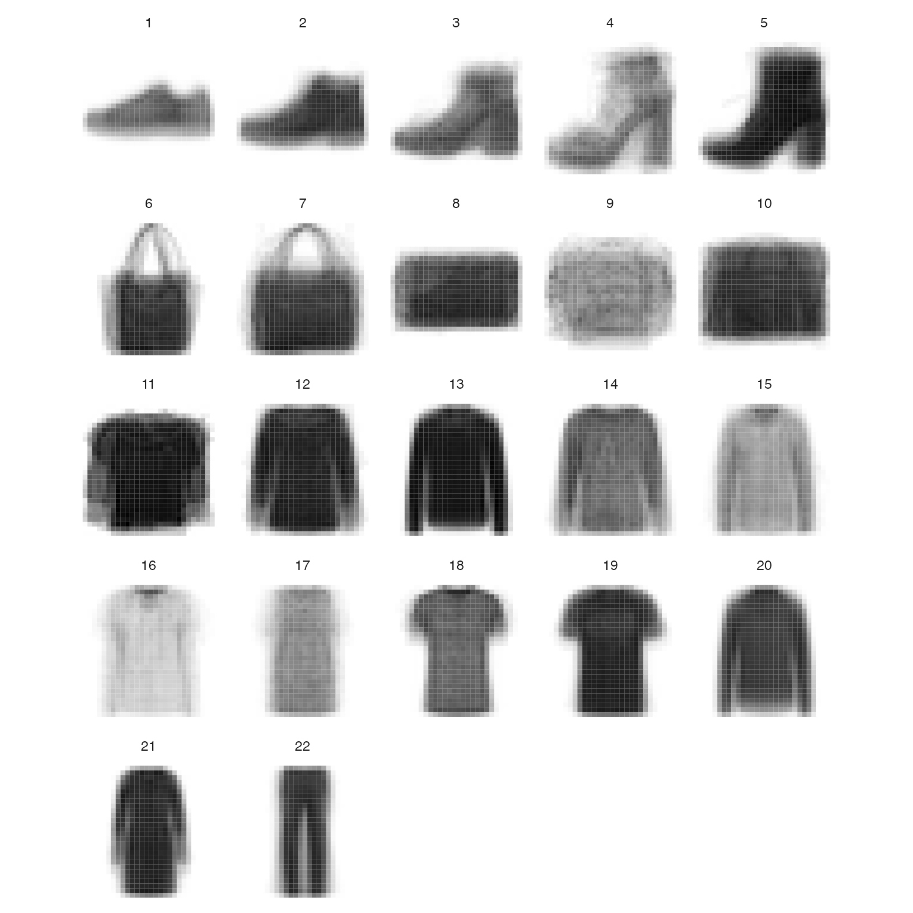

library(greed)
library(mclust)
#> Package 'mclust' version 5.4.7
#> Type 'citation("mclust")' for citing this R package in publications.
library(dplyr)
#>
#> Attaching package: 'dplyr'
#> The following objects are masked from 'package:stats':
#>
#> filter, lag
#> The following objects are masked from 'package:base':
#>
#> intersect, setdiff, setequal, union
library(ggplot2)
set.seed(2134)
data(diabetes)
X=diabetes[,-1]
sol = greed(X,model=new("gmm",mu=apply(X,2,mean),epsilon=0.1*diag(diag(cov(X))),N0=ncol(X)))
#> ------- GMM model fitting ------
#> ################# Generation 1: best solution with an ICL of -2428 and 7 clusters #################
#> ################# Generation 2: best solution with an ICL of -2407 and 4 clusters #################
#> ################# Generation 3: best solution with an ICL of -2397 and 4 clusters #################
#> ################# Generation 4: best solution with an ICL of -2396 and 4 clusters #################
#> ################# Generation 5: best solution with an ICL of -2396 and 4 clusters #################
#> ------- Final clustering -------
#> ICL clustering with a GMM model, 3 clusters and an icl of -2395.
gmmpairs(sol,X)
#> Registered S3 method overwritten by 'GGally':
#> method from
#> +.gg ggplot2
table(diabetes$cl,sol@cl)
#>
#> 1 2 3
#> Chemical 11 24 1
#> Normal 74 2 0
#> Overt 0 6 27
data(diabetes)
X=diabetes[,-1]
sol = greed(X,model=new("diaggmm",mu=apply(X,2,mean),beta=0.1*mean(diag(cov((X))))))
#> ------- DIAGGMM model fitting ------
#> ################# Generation 1: best solution with an ICL of -2471 and 6 clusters #################
#> ################# Generation 2: best solution with an ICL of -2464 and 4 clusters #################
#> ################# Generation 3: best solution with an ICL of -2464 and 4 clusters #################
#> ------- Final clustering -------
#> ICL clustering with a DIAGGMM model, 4 clusters and an icl of -2464.
gmmpairs(sol,X)
table(diabetes$cl,sol@cl)
#>
#> 1 2 3 4
#> Chemical 0 0 25 11
#> Normal 0 0 3 73
#> Overt 11 15 7 0
plot(sol,type='tree')
solK3 = cut(sol,3)
gmmpairs(solK3,X)
table(diabetes$cl,sol@cl)
#>
#> 1 2 3 4
#> Chemical 0 0 25 11
#> Normal 0 0 3 73
#> Overt 11 15 7 0
coef(solK3)
#> $pi
#> [1] 0.1793103 0.2413793 0.5793103
#>
#> $muk
#> $muk[[1]]
#> [,1] [,2] [,3]
#> [1,] 241.6078 1152.649 75.73476
#>
#> $muk[[2]]
#> [,1] [,2] [,3]
#> [1,] 106.7758 518.0351 316.5342
#>
#> $muk[[3]]
#> [,1] [,2] [,3]
#> [1,] 91.28937 360.8309 165.9429
#>
#>
#> $Sigmak
#> $Sigmak[[1]]
#> [,1] [,2] [,3]
#> [1,] 4809.142 0.00 0.000
#> [2,] 0.000 60941.99 0.000
#> [3,] 0.000 0.00 2363.494
#>
#> $Sigmak[[2]]
#> [,1] [,2] [,3]
#> [1,] 438.9832 0.0 0.00
#> [2,] 0.0000 13532.2 0.00
#> [3,] 0.0000 0.0 25728.18
#>
#> $Sigmak[[3]]
#> [,1] [,2] [,3]
#> [1,] 154.9238 0.00 0.000
#> [2,] 0.0000 2374.17 0.000
#> [3,] 0.0000 0.00 2642.791
data(galaxies, package = "MASS")
X=data.frame(x=galaxies)
sol = greed(X,model=new("gmm",mu=apply(X,2,mean),epsilon=0.1*cov(X),N0=ncol(X)))
#> ------- GMM model fitting ------
#> ################# Generation 1: best solution with an ICL of -794 and 3 clusters #################
#> ################# Generation 2: best solution with an ICL of -794 and 3 clusters #################
#> ------- Final clustering -------
#> ICL clustering with a GMM model, 3 clusters and an icl of -794.
gmmpairs(sol,X)
data("fashion")
prior = new("diaggmm",mu=apply(fashion$X,2,mean),beta=0.1*mean(diag(cov((fashion$X)))))
sol=greed(fashion$X,model=prior,alg=new("seed"),K=60)
#> ------- DIAGGMM model fitting ------
#> ------- Final clustering -------
#> ICL clustering with a DIAGGMM model, 22 clusters and an icl of -3590953.
plot(sol,type='tree')
im_list=lapply(1:sol@K,function(k){
tibble(i=rep(28:1,each=28),j=rep(1:28,28),v=t(sol@obs_stats$regs[[k]]$m),k=k)
})
ims = do.call(rbind,im_list)
ggplot(ims)+
geom_tile(aes(y=i,x=j,fill=v))+
scale_fill_gradientn(colors=c("#ffffff","#000000"),guide="none")+
scale_x_continuous(breaks=c())+scale_y_continuous(breaks=c())+facet_wrap(~k)+
coord_equal()+theme_minimal()+
theme(axis.title.x = element_blank(),axis.title.y = element_blank())